Slide the stencil onto the flat dark area: every product is 0. sum = 0 — silent. The filter only shouts on its pattern.
LIVEWE COMPUTE THE NINE PRODUCTS TOGETHER, OUT LOUD, BEFORE THE ANSWER
06
STEP 3 · ONE FILTER, RUN EVERYWHERE
A filter is a pattern detector
INPUT PHOTO
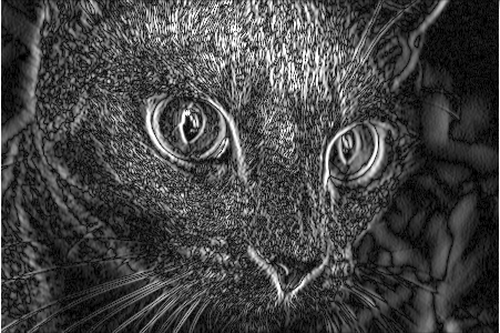
OUR FILTER FROM LAST SLIDE · VERTICAL EDGES
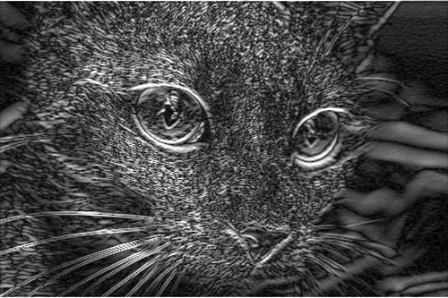
SAME FILTER, ROTATED · HORIZONTAL EDGES
White = the stencil shouted “my pattern is here.” Whiskers and eye outlines glow.
Real output — this exact code ran on this exact photo.
07
STEP 4 · STACKING FILTERS
Edges → textures → parts → objects
LAYER 1
edges & color blobs
LAYER 2
textures — fur, stripes, mesh
DEEPER
parts — ear, eye, wheel
LAST
whole objects — “cat”
Each layer looks at the previous layer’s maps,
not the raw photo. This stack is a convolutional neural network — a CNN.
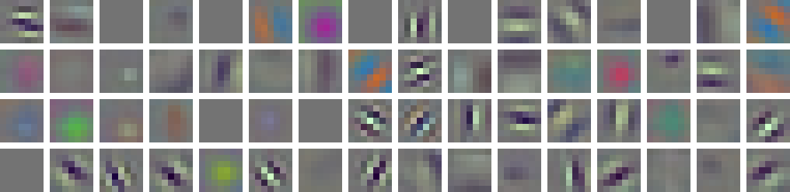
ALL 64 FIRST-LAYER FILTERS OF RESNET18 · LEARNED FROM 1.28M PHOTOS
Nobody drew these. The network discovered, by itself,
that edge and color stencils are the right place to start — the same idea you just computed by hand.
08
CODE CARD 1 OF 4 · PYTORCH
The whole “eye” is one line
import torch.nn as nn
layer = nn.Conv2d(in_channels=3, # red, green, blue
out_channels=32, # learn 32 different stencils
kernel_size=3) # each stencil is 3×3
One line of Python = 32 sliding stencils —
exactly the operation you did by hand.
09
ACT 2 · HOW IT LEARNS
Nobody programs the filters. The network finds them.
10
STEP 5 · NO EQUATIONS, PROMISE
Learning = guess, get told how wrong, adjust
The hot-and-cold game: guess, get told “colder,” adjust.
After enough rounds, random noise has turned into the edge detectors you saw.
A mirrored cat is still a cat. Every epoch each photo arrives slightly different,
so the network can’t memorize — it must learn what cats look like.
These are the exact lines from my training code.
12
REAL NUMBERS · MY NOTEBOOKS · CIFAR-10 TEST SET
I trained this. Here’s what happened.
Same task: tiny photos, 10 categories (CIFAR-10).
Accuracy on photos the models never saw.
All three are my runs,
on an ordinary CPU. The notebooks rerun everything tonight if you want.
Lesson: in modern AI you stand on
giants’ shoulders.
LIVEBEFORE THE REVEAL: CHAT GUESSES MY FROM-SCRATCH ACCURACY · CLOSEST WINS
13
CODE CARD 3 OF 4 · TRANSFER LEARNING
Borrowing a giant’s eyes
from torchvision.models import resnet18, ResNet18_Weights
model = resnet18(weights=ResNet18_Weights.IMAGENET1K_V1)
model.fc = nn.Linear(512, 10) # swap the last layer: my 10 classes
Keep every learned filter; replace only the final layer.
This is transfer learning — the 74.2% recipe.
14
ACT 3 · WHAT THIS UNLOCKS
Same trick. Four superpowers.
15
TRAILER 1 OF 4 · OBJECT DETECTION
Find it and box it
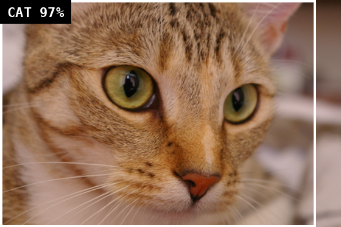
REAL OUTPUT · CAT · 97% CONFIDENT
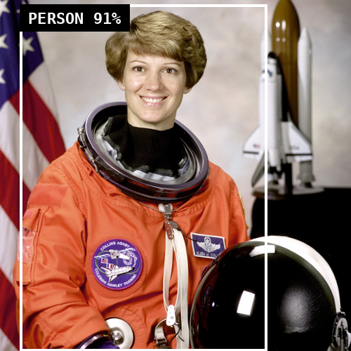
REAL OUTPUT · PERSON · 91% CONFIDENT
Classification says “there’s a cat somewhere.” Detection says where — with a box.
One pass predicts boxes + labels + confidence — fast enough for live video.
Self-driving cameras; your phone finding faces before it focuses.
16
TRAILER 2 OF 4 · SEGMENTATION
Cut out the exact shape
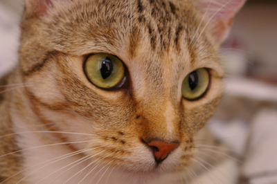
PHOTOPREDICTED MASK · WHITE = “CAT PIXEL”
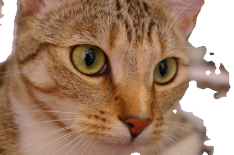
MASK USED AS SCISSORS
Every single pixel gets a label: cat or not-cat.
Real model output — and exactly how this video call blurs my background right now.
17
TRAILER 3 OF 4 · CLIP
A model that speaks image and text
I GAVE CLIP THIS PHOTO + 4 SENTENCES
CLIP learned from 400 million internet photos
with their captions. It scores how well a sentence matches an image — so you classify with
sentences, no training. That’s “zero-shot.”
TRAINING: RUIN THE PHOTO, STEP BY STEP → (REAL NOISE, REALLY ADDED)
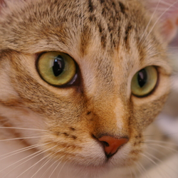
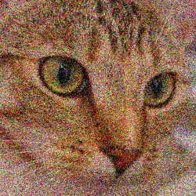
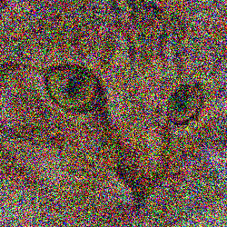
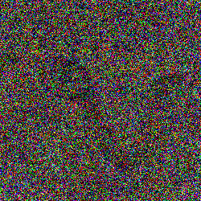
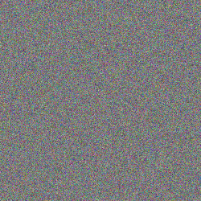
← GENERATION: START FROM PURE STATIC, LEARN TO UNDO ONE STEP AT A TIME
The network practices one humble skill — remove a little noise.
Apply it over and over to fresh static and an image crystallizes. That’s diffusion,
the engine of AI image generators.
19
RECAP · PIXELS → FILTERS → LEARNING → SUPERPOWERS
Not magic. A syllabus.
Everything today is on the official IOAI 2026 syllabus — the high-school AI olympiad I’m training for.
My two notebooks rerun it all: the CNN, the 50.0 → 74.2 → 88.5 ladder. They’re yours.
You multiplied small numbers and ran a convolution. So yes — you can do this.